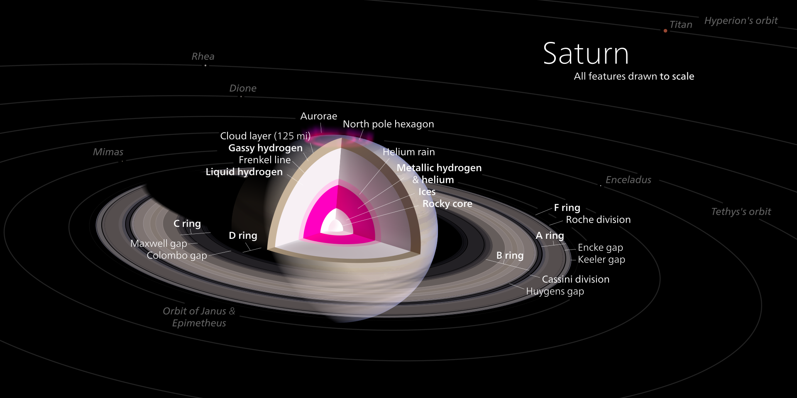

Saturn is a gas giant composed predominantly of hydrogen and helium. It lacks a definite surface, though it is
likely to have a solid core. Saturn's rotation causes it to have the shape of an oblate spheroid; that is, it is
flattened at the poles and bulges at its equator. Its equatorial and polar radii differ by almost 10%: 60,268 km
versus 54,364 km. Jupiter, Uranus, and Neptune, the other giant planets in the Solar System, are also oblate but
to a lesser extent. The combination of the bulge and rotation rate means that the effective surface gravity
along the equator, 8.96 m/s2, is 74% of what it is at the poles and is lower than the surface gravity of Earth.
However, the equatorial escape velocity of nearly 36 km/s is much higher than that of Earth.
Saturn is the only planet of the Solar System that is less dense than water—about 30% less. Although Saturn's
core is considerably denser than water, the average specific density of the planet is 0.69 g/cm3 due to the
atmosphere. Jupiter has 318 times Earth's mass, and Saturn is 95 times Earth's mass. Together, Jupiter and
Saturn hold 92% of the total planetary mass in the Solar System.
Internal Structure
Despite consisting mostly of hydrogen and helium, most of Saturn's mass is not in the gas phase, because
hydrogen becomes a non-ideal liquid when the density is above 0.01 g/cm3, which is reached at a radius
containing 99.9% of Saturn's mass. The temperature, pressure, and density inside Saturn all rise steadily
toward the core, which causes hydrogen to be a metal in the deeper layers.
Standard planetary models suggest that the interior of Saturn is similar to that of Jupiter, having a small
rocky core surrounded by hydrogen and helium, with trace amounts of various volatiles. Analysis of the
distortion shows that Saturn is substantially more centrally condensed than Jupiter and therefore contains a
significantly larger amount of material denser than hydrogen near its centre. Saturn’s central regions
contain about 50% hydrogen by mass, while Jupiter’s contain approximately 67% hydrogen.
This core is similar in composition to Earth, but is more dense. The examination of Saturn's gravitational
moment, in combination with physical models of the interior, has allowed constraints to be placed on the
mass of Saturn's core. In 2004, scientists estimated that the core must be 9–22 times the mass of Earth,
which corresponds to a diameter of about 25,000 km. However, measurements of Saturn's rings suggest a much
more diffuse core with a mass equal to about 17 Earths and a radius equal to around 60% of Saturn's entire
radius. This is surrounded by a thicker liquid metallic hydrogen layer, followed by a liquid layer of
helium-saturated molecular hydrogen that gradually transitions to a gas with increasing altitude. The
outermost layer spans 1,000 km and consists of gas.
Saturn has a hot interior, reaching 11,700 °C at its core, and radiates 2.5 times more energy into space
than it receives from the Sun. Jupiter's thermal energy is generated by the Kelvin–Helmholtz mechanism of
slow gravitational compression, but such a process alone may not be sufficient to explain heat production
for Saturn, because it is less massive. An alternative or additional mechanism may be generation of heat
through the "raining out" of droplets of helium deep in Saturn's interior. As the droplets descend through
the lower-density hydrogen, the process releases heat by friction and leaves Saturn's outer layers depleted
of helium. These descending droplets may have accumulated into a helium shell surrounding the core.
Rainfalls of diamonds have been suggested to occur within Saturn, as well as in Jupiter and ice giants
Uranus and Neptune.

Atomsphere
The outer atmosphere of Saturn contains 96.3% molecular hydrogen and 3.25% helium by volume.The proportion of
helium is significantly deficient compared to the abundance of this element in the Sun.The quantity of
elements heavier than helium (metallicity) is not known precisely, but the proportions are assumed to match
the primordial abundances from the formation of the Solar System. The total mass of these heavier elements
is estimated to be 19–31 times the mass of the Earth, with a significant fraction located in Saturn's core
region.
Trace amounts of ammonia, acetylene, ethane, propane, phosphine, and methane have been detected in Saturn's
atmosphere. The upper clouds are composed of ammonia crystals, while the lower level clouds appear to
consist of either ammonium hydrosulfide (NH4SH) or water.Ultraviolet radiation from the Sun causes methane
photolysis in the upper atmosphere, leading to a series of hydrocarbon chemical reactions with the resulting
products being carried downward by eddies and diffusion. This photochemical cycle is modulated by Saturn's
annual seasonal cycle. Cassini observed a series of cloud features found in northern latitudes, nicknamed
the "String of Pearls". These features are cloud clearings that reside in deeper cloud layers.
Cloud layers
Saturn's atmosphere exhibits a banded pattern similar to Jupiter's, but Saturn's bands are much fainter and
are much wider near the equator. The nomenclature used to describe these bands is the same as on Jupiter.
Saturn's finer cloud patterns were not observed until the flybys of the Voyager spacecraft during the 1980s.
Since then, Earth-based telescopy has improved to the point where regular observations can be made.
The composition of the clouds varies with depth and increasing pressure. In the upper cloud layers, with the
temperature in the range 100–160 K and pressures extending between 0.5–2 bar, the clouds consist of ammonia
ice. Water ice clouds begin at a level where the pressure is about 2.5 bar and extend down to 9.5 bar, where
temperatures range from 185 to 270 K. Intermixed in this layer is a band of ammonium hydrosulfide ice, lying
in the pressure range 3–6 bar with temperatures of 190–235 K. Finally, the lower layers, where pressures are
between 10 and 20 bar and temperatures are 270–330 K, contains a region of water droplets with ammonia in
aqueous solution.
Saturn's usually bland atmosphere occasionally exhibits long-lived ovals and other features common on
Jupiter. In 1990, the Hubble Space Telescope imaged an enormous white cloud near Saturn's equator that was
not present during the Voyager encounters, and in 1994 another smaller storm was observed. The 1990 storm
was an example of a Great White Spot, a unique but short-lived phenomenon that occurs once every Saturnian
year, roughly every 30 Earth years, around the time of the northern hemisphere's summer solstice. Previous
Great White Spots were observed in 1876, 1903, 1933 and 1960, with the 1933 storm being the most famous. If
the periodicity is maintained, another storm will occur in about 2020.
The winds on Saturn are the second fastest among the Solar System's planets, after Neptune's. Voyager data
indicate peak easterly winds of 500 m/s (1,800 km/h). In images from the Cassini spacecraft during 2007,
Saturn's northern hemisphere displayed a bright blue hue, similar to Uranus. The color was most likely
caused by Rayleigh scattering. Thermography has shown that Saturn's south pole has a warm polar vortex, the
only known example of such a phenomenon in the Solar System. Whereas temperatures on Saturn are normally
−185 °C, temperatures on the vortex often reach as high as −122 °C, suspected to be the warmest spot on
Saturn.
Hexagonal cloud patterns
A persisting hexagonal wave pattern around the north polar vortex in the atmosphere at about 78°N was first
noted in the Voyager images. The sides of the hexagon are each about 14,500 km (9,000 mi) long, which is
longer than the diameter of the Earth. The entire structure rotates with a period of 10h 39m 24s (the same
period as that of the planet's radio emissions) which is assumed to be equal to the period of rotation of
Saturn's interior. The hexagonal feature does not shift in longitude like the other clouds in the visible
atmosphere. The pattern's origin is a matter of much speculation. Most scientists think it is a standing
wave pattern in the atmosphere. Polygonal shapes have been replicated in the laboratory through differential
rotation of fluids.
HST imaging of the south polar region indicates the presence of a jet stream, but no strong polar vortex nor
any hexagonal standing wave. NASA reported in November 2006 that Cassini had observed a "hurricane-like"
storm locked to the south pole that had a clearly defined eyewall.Eyewall clouds had not previously been
seen on any planet other than Earth. For example, images from the Galileo spacecraft did not show an eyewall
in the Great Red Spot of Jupiter.
The south pole storm may have been present for billions of years. This vortex is comparable to the size of
Earth, and it has winds of 550 km/h.
Magnetosphere
Saturn has an intrinsic magnetic field that has a simple, symmetric shape—a magnetic dipole. Its strength at
the equator—0.2 gauss (µT)—is approximately one twentieth of that of the field around Jupiter and slightly
weaker than Earth's magnetic field. As a result, Saturn's magnetosphere is much smaller than Jupiter's. When
Voyager 2 entered the magnetosphere, the solar wind pressure was high and the magnetosphere extended only 19
Saturn radii, or 1.1 million km (712,000 mi), although it enlarged within several hours, and remained so for
about three days. Most probably, the magnetic field is generated similarly to that of Jupiter—by currents in
the liquid metallic-hydrogen layer called a metallic-hydrogen dynamo. This magnetosphere is efficient at
deflecting the solar wind particles from the Sun. The moon Titan orbits within the outer part of Saturn's
magnetosphere and contributes plasma from the ionized particles in Titan's outer atmosphere. Saturn's
magnetosphere, like Earth's, produces aurorae.

 HOME
HOME

 ORBIT&
ORBIT& NATURAL
NATURAL REFERENCE
REFERENCE